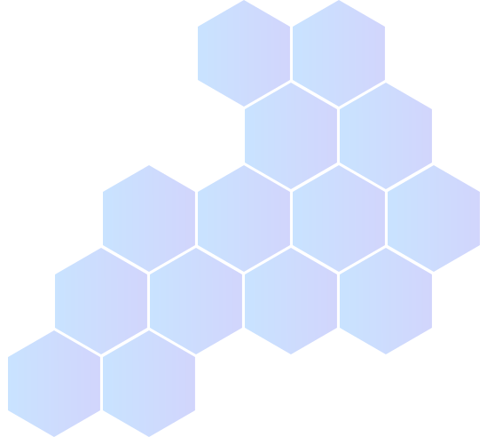
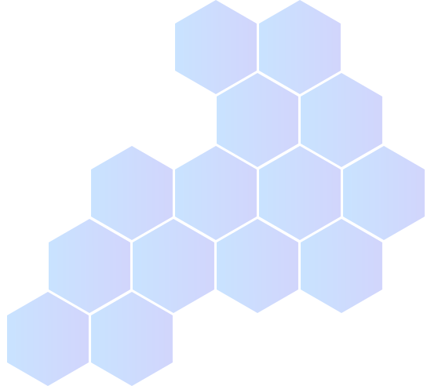

Well, how did I get here?
My move to the United States from Chile at the age of 5 shaped me to be the curious person I am today. This change was quite drastic and it required me to learn an abundance of new things at a fast pace through
observation of people. Before moving, I was very extroverted but I quickly became more introverted as I began to settle in the US. My newly acquired introversion inevitably led me down the path to Design as I began to spend a lot of
time sketching and coloring how I would rearrange things in my room. As the internet boom continued to blossom, I found myself playing around with HTML on sites like MySpace. I even made my own MySpace “layouts” using HTML, which
brought me back to when I would sketch out the layout of my room. I was amazed at how changing bits of code could immediately result in change. During this time I also played way too much of the game Animal Crossing which involved a
lot of design-driven decision making. I ended up taking many art classes in high school but I never dreamed it would be possible to have a career involving both my creativity and curiosity about technology.
Studying the mind
Since I was always curious about people growing up, I decided to major in Psychology in college. My degree involved a lot of meticulous research methods, and while I genuinely loved tackling questions through
research, I quickly became bogged down with the amount of time it took to get things approved in order to start the research process. I was also discouraged by the idea that my research could simply become a piece of academic
literature that the general public doesn’t really benefit from. I’m very introspective and spend way too much thinking about our world, universe and the grand scheme of things so I wasn’t comfortable with the idea that my work would
have no direct impact on the world in which we live in.
Goodbye comfort zone
After graduating with my degree in Psychology, I was unsure of what my exact next steps would be as I felt a disconnect between academia and what I truly wanted from degree. I knew that I wanted to step out of
my comfort zone and also gain experience straight out of college, so I took a customer support job. This job was initially daunting to me was extremely reserved and shy. However, I quickly learned how to solve issues over the phone
and I got a firsthand look at frustrations users go through on a daily basis. During this job I noticed problems users would encounter and I would think about how to potentially fix them.
Combining my passions
Not long after starting the job, I learned about UX/UI Design and was instantly intrigued. I loved the idea of using research to directly impact the general public. Unlike the research from my undergrad degree,
UX research and design would directly impact technologies used by the general public. I was also excited about being able to use the same creative energy I had back in my days of playing with HTML and redesigning my house in Animal
Crossing. I feel lucky to live in a technologically evolving age because now I can directly impact our world.
 
